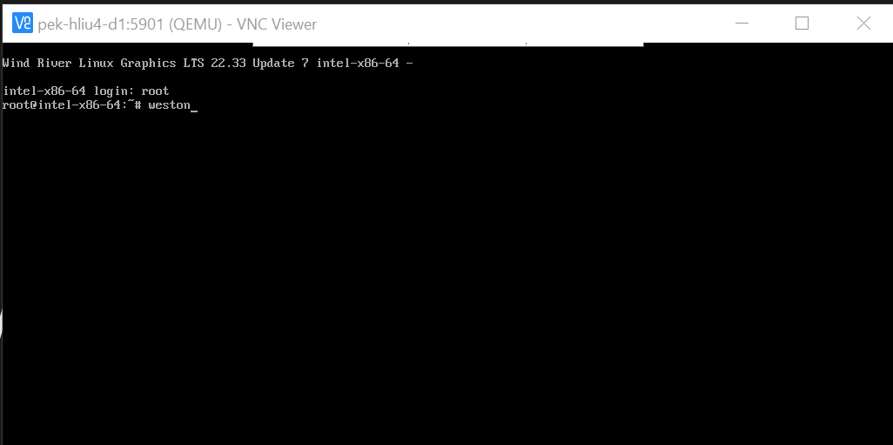
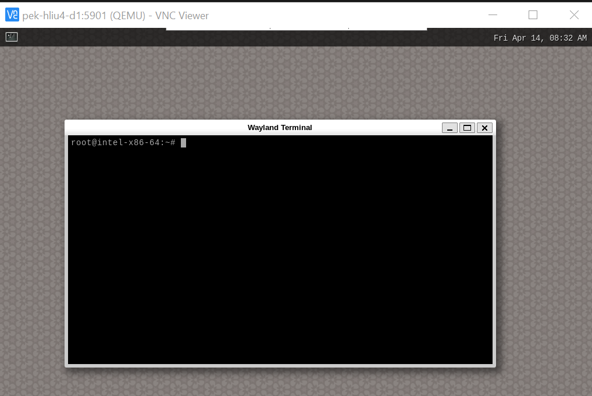

WRLinux with wayland and weston¶
qemu-system-x86_64 -enable-kvm -m 2048 wrlinux-image-std-sato-intel-x86-64.ext4 \
-append 'console=ttyS1,115200 root=/dev/sda console=ttyS0' \
-kernel bzImage -vnc :1 \
-vga virtio -nographic \
-usbdevice tablet -nodefaults
Outlook:
 